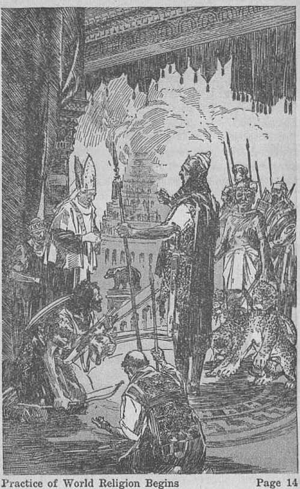
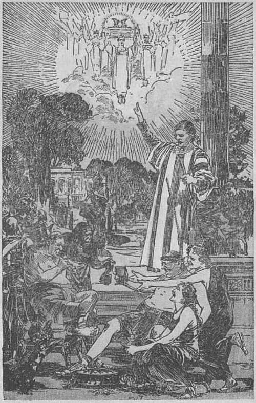

explained in
Seven Bible Treatises
by
J. F. RUTHERFORD
Page
3 Beyond the Grave
12 Religions
22 New Heavens and New Earth
31 World's Judgment
30 Prophecy
48 Justify Ing War
50 Whois Your God?
The lives of countless millions would have been filled with comfort had they had the information herein.
This booklet is not based on human teachings, but upon the Word of the great “God of all comfort”. It is sent forth in confidence that it will serve a great need of the people in this dark day, brightening their hope of a perfect government soon on earth, with lasting blessings for the living and the dead.
Copyrighted 1934 and Published by
WATCH TOWER BIBLE AND TRACT SOCIETY International Bible Students Association Brooklyn, N. Y., U. S. A.
Made in the United States of America
Branch Offices:
London, Magdeburg, Paris, Toronto, Strathfield, Cape Town, Berne, Copenhagen, Stockholm, and other ci tics.
MEN WHO CLAIM to be wise tell the people that great men living on the earth for a season accomplish much and then at death pass on to the next world, there to accomplish much more. In recent years a man known throughout the earth as an inventive genius died. Public men and the public press would have the people believe that that man was really the creator of light and power and that when he died he passed quickly into another world where he will accomplish much more. In this they deceive themselves and deceive many others and dishonor God. One man who was at the bedside when death ensued states that the dying man remarked, “It is beautiful over there,” thereby meaning to convey the thought that the dying man could see beyond the grave. It is exceedingly doubtful if the dying man ever made such a statement, but if he did make it the statement was due to a delusion resulting from weakness.
Have any truly great men ever lived on earth aside from Jesus Christ, the beloved Son of God? I answer in harmony with the Scriptures, Not one. But is not a man great •when he can invent electric lights, electric trains, and cause s that power called "electricity” to. move great machinery? If a man.could do these things he might be called great, but no man ever invented electricity or electric lights. It is freely claimed that electricity is a modern invention and that man had much to do with the original invention thereof and therefore man is great and his name and fame are immortal. Others laud the name of such so-called "great” men and give them praise and honor. But why not give honor to Jehovah God, who created all things? It was Jehovah who said, “Let there be light,” and "there was light”; and that was long before man was created. Instead of electricity’s being a modern invention it is one of the means which Jehovah God created and which he employed to light the pillar of cloud that went before the Israelites to guide them at night, and he also used it to light the most holy in the tabernacle which he caused to be erected in the wilderness for the Jews. Satan would have the people believe, however, that man invented electricity.
The peoples of earth have been greatly blessed by the use of electricity during the past half century, but no man is the inventor thereof. Men with much more than ordinary ingenuity have harnessed this power and used it to the good of mankind and also to the injury of mankind. Men are prone to attach too much importance to the achievements of human creatures and then to say that the brains of great men do not perish at death but live on to accomplish greater things. What tilings man achieves are confined to this earth; and when he dies his achievements stop at the grave, where he awaits God’s due time to waken him out of death. When a man dies God suffers no loss. Let it be kept in mind that our common enemy Satan always attempts to make man appear to be greater than God, his purpose being to turn man away from God, who is man’s real Friend. It was Jesus who said ‘that which is highly esteemed amongst men is an abomination to Jehovah God’. The reason why such esteem is an abomination to God is that Satan uses men to sing the praises of other men to turn mankind away from God, and this to the hurt of man. At Psalm 94: 8-11 (A.R.V.) God’s prophet says: “Consider, ye brutish among the people; and ye fools, when will ye be wise? He that planted the ear, shall he not hear? He that formed the eye, shall he not see? He that chastiseth the nations, shall not he correct, even he that teacheth man knowledge? Jehovah knoweth the thoughts of man, that they are vanity.”
It was Satan who brought forth Nimrod as the first ‘great and mighty’ man and made the people believe that he was greater than God. Jehovah could have prevented Satan from doing this, to be sure, but he has put before men good and let men choose either that or choose to take a wrongful course. At the same time God has warned men against the deception practiced by Satan. Amongst such instruction of warning Jehovah says (Psalm 146: 3,4) : “Put not your trust in princes, nor in the son of man, in whom there is no help. His breath goeth forth, he returneth to his earth; in that very day his thoughts perish.” This divine rule applies with equal force to the weak and to the strong. A man of much earthly attainment and who has done much more than ordinary men is at death in the same condition as a nonentity. There is no immortalizing of the minds at death, because it is written, in Ecclesiastes 9: 5,10: ‘The dead know not anything; there is no wisdom, nor device, nor knowledge, in the grave, where man goes.’ To deify man and magnify his importance and what man has accomplished in this life tends always to turn men away from God, who is the only source of life and blessing.
Man did not create himself; nor did man formulate the purpose for which he was created. The eternal, supreme and all-wise God made man and gave him life and declared the purpose for which he was created. The fact that God made man superior to the brute beasts and endowed him with reasoning faculties implies that man’s greatest efforts should be put forth to learn the will of his Creator, who is always right, to reason upon it and then to do God’s will.
Even the courts of the land recognize that when a man is dying he is not competent to make a will disposing of his property. With stronger reasoning it must appear to all that a dying man could not look into the future and say what is there. Satan takes advantage of the weakness of dying men to induce them to speak of what they imagine they see but which they cannot in fact see. Satan would induce men to believe that what is called death is their friend and that then they pass into a better condition. This is the substance of Satan’s first lie. The Scriptures plainly tell us that death is man's worst enemy aside from Satan himself. Except for the unselfish provision God has made for man there would be no hope whatsoever beyond the grave. God made the first human creature perfect, with the right to live on earth as long as he did right. When he willfully did wrong God sentenced him to death, which means his everlasting destruction unless God delivers him out of death. Jehovah God has made provision for man’s deliverance from death, but as long as Satan can keep men in ignorance of the truth they cannot avail themselves of God’s gracious provision.
Let the people cease from an attempt to immortalize men, and give heed to the Word of God, that they may know what is beyond the grave. The death penalty was justly put upon Adam; and all men, without exception, have suffered from the effects thereof. All were, by inheritance, born in sin. Agreeable to his promise God sent his beloved Son to earth to take the place of the sinner in death in order that mankind might be relieved from death and its effects. Therefore it is written, in John 3:16: "For God so loved the world, that he gave his only begotten Son, that whosoever believeth in him should not perish, but have everlasting life." Belief in God and in Christ is absolutely essential to receiving life beyond the grave; and no man can believe without first he has some knowledge upon which he bases that belief. Hence it is written, in Romans 10:11: “How then shall they call on him in whom they have not believed? and how shall they believe in him of whom they have not heard?”
A free gift cannot be accepted by a man until he has knowledge that the gift is offered to him. If man is wholly ignorant of such offer, how could he receive it? If men are induced to believe that when a good man dies ho goes at once into another world where he continues to grow great, and this reward he receives by reason of his greatness attained on earth, they show their entire ignorance of the only way that leads to life. The Scriptures declare that there is no name given under heaven whereby men can be given life except by and through Christ Jesus. In Romans 5:18 it is written: “As by the offence of one judgment came upon all men to condemnation; even so by the righteousness cf one the free gift came upon all men unto justification of life.” If a man dies in ignorance of God’s gracious promise of redemption and resurrection by the blood of Christ Jesus, then it will be absolutely impossible for him to at once pass into another and better world. It will be necessary for him first to be raised out of death and given a knowledge of the truth before he can have an opportunity for life.
There is but one class of persons that can even by faith look with hope for a better place beyond this world, and that class of people is made up of those who are fully devoted to God as followers of Christ Jesus. The apostle Paul was one of such, and when he had finished his earthly work he wrote: ‘I have kept the faith, and shall wait for the coming of Christ Jesus and his kingdom, and I know that then I and those who love his appearing will receive the crown of life.’ But Paul did not rely upon his earthly attainments as a great man as a reason for receiving such reward. On the contrary, he counted every worldly attainment as nothing. He said, at Philippians 3:7-11: “But what things were gain to me, those I counted loss for Christ. Yea, doubtless, and I count all things but loss, for the excellency of the knowledge of Christ Jesus my Lord; for whom I have suffered the loss of all things, and do count them but dung, that I may win Christ, and be found in him, not having mine own righteousness, which is of the law, but that which is through the faith of Christ, the righteousness which is of God by faith; that I may know him, and the power of his resurrection, and the fellowship of his sufferings, being made conformable unto his death; if by any means I might attain unto the resurrection of the dead.”
No man can have the hope of passing at death into a better condition who has not believed upon God and upon Christ and his kingdom and devoted himself entirely to the Lord. Regardless of all earthly attainment, the man who has devoted himself to the things of this world cannot possibly look into the future when on his deathbed and truthfully say: “It is beautiful over there.” If Satan can practice such fraud upon the dying and upon the living he thereby succeeds in causing them to be kept in ignorance of God's provision.
There is hope for the dead who die in ignorance, and that hope is in the resurrection; because it is written, in Acts 24:15: “Thore shall be a resurrection of the dead, both of the just and unjust.” Again, in Acts 17:31, the statement is made that God has appointed a specific time, during the reign of Christ, in which all mankind shall have a fair trial for life. Those who have died outside of Christ are dead and unconscious, in the grave. At the Lord’s due time these shall be awakened out of death and given a knowledge of the truth and an opportunity to live. In 2 Timothy 4:1 the Scriptural statement is that Christ Jesus shall judge the living and the dead at his coming and his kingdom. The hope for the obedient ones under his judgment is that they shall be made perfect men and live on the earth for ever. They will then learn that all of the great inventions are the result of God’s favor and not of man’s ingenuity.
God created the earth for man and man for the earth, and the restored man will inhabit the earth in due time, because the Lord has so promised, as stated in Isaiah, 45th chapter. Men who have been diligent in accomplishing good and desirable things for themselves and their fellow man while in this life may accomplish greater things when restored to perfection under Christ Jesus, but they will then learn that whatsoever they have, and all their attainments, are due to the loving-kindness and gracious gift of Jehovah God.
Because we are now in the period of transition from Satan's world of darkness to the kingdom of God’s dear Son, he has permitted many heretofore hidden things to come to light, and, without doubt, during the reign of Christ men will learn far more than has ever been learned until now. All they learn, however, will not make them heady nor cause them to give honor and glory to man, but will cause them to give honor and glory to Jehovah God, to whom honor is due, and because he is the source of life and all blessings.
Seeing that God ordered the electric light for the benefit of his chosen people Israel long centuries ago, and that he has permitted men to use this same light and power for their aid and comfort in these days, we may be sure that this great power will be used for many more beneficial things during the reign of Christ. The promise is that then the weeds and thistles and pests, and like things, shall be destroyed; and it is entirely reasonable to conclude that the Lord will show man how to get rid of these things and this may be done by electricity. Every man, however, who will receive the blessings under the kingdom of Christ must believe that Jehovah God is the Eewarder of man and that Jesus Christ is his Administrative Officer. For man’s benefit Jehovah will have all men to know that he is the only true God and that there is none besides him.
RELIGIONS may be properly placed in two classes, to wit: (1) the true religion, which means a loving obedience to Jehovah God and a joyful service rendered to him; and (2) world religions, which include the various outward forms of worship practiced by men and by which men indicate their belief in some superior power which power has to do, as they believe, with their eternal welfare. All peoples of earth practice some kind of formalism called religion, and doubtless all are sincere. By the term "world religion” is meant that form of outward worship practiced by the people who are of the world. With malice toward no one, and with a sincere desire to aid all who wish to ascertain the truth, I now call attention first to the world religions, showing the origin and the development thereof, and then I shall point out from the Scriptures what is the true and pure religion.
There is one true and almighty God who is from everlasting to everlasting, and his name is Jehovah. There is one mimic or fraudulent god who practices fraud and deceit to mislead the people, and his name is Satan the Devil. Man is created with a natural desire and tendency to worship some higher power; and since life proceeds from Jehovah God, he is the one worthy of all worship by men. Knowing the natural tendency of men to worship, and having a covetous desire for the worship of man, Satan has practiced fraud upon men and has led them into the worship of anything except Jehovah God. The Scriptures tell us that Satan is the god or invisible ruler of this world. The word world means the peoples of earth organized into forms of government and acting under’ the influence and control of an invisible and higher power. If that unseen power is wicked the world is wicked. If the unseen power is righteous and good that world is good. From Eden till now the world has been wicked because Satan the wicked one has exercised controlling power overmen and nations and kept them under his control and turned them away from the true God. A religion, therefore, that does not load mon to give all their love and devotion to Jehovah is a world religion, regardless of the sincerity of those who practice it. That religion may be called heathen or it may be called Christian. "Organized Christianity” is a world religion, and is therefore not true and does not represent Jehovah God.
World religion had its origin about two hundred and fifty years after Adam was expelled from Eden. By that time the people had increased in numbers and had fallen under the influence of Satan. The people began to organize themselves into a company, and it is written, in Genesis four, that Then they began to call themselves by the name of the Lord’. (Mar/jui?) This they did under the wicked influence of Satan and in derision and mockery of Jehovah God.
Later the people assembled on the plains of Shinar, and under the influence of the unseen power Satan they set about to build a tower that it might reach up to heaven. They there began the practice of a religion which was wicked, because Satan induced them to worship Nimrod, a man, and give to him a name even above that of Jehovah God. By the building of the tower of Babel and instituting Devil worship this people said in substance: "We have no need of Jehovah God.” Satan had turned them away from the true God. That marks the beginning of organized governments, and from then till now every organized government of earth has had a state religion or a recognized and practiced religion peculiar to its own state or nation. There have been seven great world powers, and each one of these world powers has had its religion. The last two, Rome and Britain, adopted what they call "the Christian religion” or "organized Christianity”. While these nations claim to be Christian, they are not the representatives of God and Christ, but are worldly organizations and part of'the world and under the influence and control of the invisible ruler Satan. Their leaders constitute a part of the ruling factors of the world. The tendency of all these religions is to give honor and praise to men or to some unseen idol or god and to turn the people away from the worship of the true and almighty God.
Jehovah God selected the children of Abraham and adopted them as his own peculiar people. These are called Israelites, or Jews. Jehovah God led them out from Egypt and to Mount Sinai and there inaugurated a covenant with
Page 1-1
Practice of World Religion Begins
them and gave to them his law. His first great commandment to them is recorded in Exodus, the 20th chapter, and reads: “I am the Lord thy God, which have brought thee out of the land of Egypt, out of the house of bondage. Thou shalt have no other gods before me. Thou shalt not make unto thee any graven image, or any likeness of any thing that is in heaven above, or that is in the earth beneath, or that is in the water under the earth: thou shalt not bow down thyself to them, nor serve them.” ■ The reason Jehovah God thus commanded the Israelites was to safeguard them from the wicked influence of Satan the Devil. The only way that they could be protected was to faithfully adhere to and servo Jehovah God. Then God caused Moses to build a tabernacle for the Jews in the wilderness and there they worshiped Jehovah and there he used them to make pictures or types of greater things to follow concerning the development of his kingdom. When the Jews had settled at Jerusalem the temple was built, and there they assembled to worship Jehovah God. Such is properly called the Jewish religion because it was their method of worshiping Jehovah under his commandment. Satan used the nations about Jerusalem to seduce the Jews and the Jews fell away to the Devil worship, and God cast them away from him. The leaders and teachers amongst the Jews drew near to God with their words but they did not devote themselves to Jehovah, and therefore their religion became a world religion. —Isaiah 29:13,
Jehovah God sent Jesus to earth, who. repeated the divine commandment that the only and right and proper course was to have no God besides Jehovah, and that the people must worship him in spirit and in truth. Jesus gathered about him some to be his faithful followers and with these began the building of his church, and which is called the “church of the living God” because these worship and serve only Jehovah, the true and eternal God. Jesus had nothing to do with this world, and the pure religion had no connection with this world. On the contrary, he said: “My kingdom is not of this world.” He was entirely opposed to world religions because these are under the direction of Satan. He told his followers that Satan is the ruler of this world and that he was against Satan. Jesus was in the world, but he was no part of it. Instead of submitting himself to the prince of this world he resisted the Devil and his influence and said to his disciples, as recorded in John 16:33: “I have overcome the world.” Then he caused to be written to his followers that they must overcome the world by being faithful and true to Jehovah God. True Christianity increased while the apostles were on the earth, even though greatly opposed by Satan and his agents.
Shortly after the apostles died the religion ■which is now called "the Christian religion” became a world religion, and has been such since. Leaders in the organization called "Christian” entered fully into politics and became a part of the ruling powers of the world and then there was introduced into these so-called "church” organizations all manner of formalism, which formalism gives honor to men, both dead and alive, and tends to turn the people away from Jehovah God and to Satan the god of this world. Today in every land that is called "Christian” and in all the nations which compose "Christendom” politics, finance, and religion go hand in hand as the ruling powers of the world. "Organized Christianity” not only is a friend of this world, but is a part of the world. Concerning such it is written, in James 4:4: "Know ye not that the friendship of the world is enmity with God? whosoever therefore will be a friend of the world is the enemy of God.” So-called "organized Christianity” honors men and sings the praises of men, and, although claiming to represent God, these wrongfully say that men can reform the world and make this earth a fit place on which to live; and thereby they completely ignore the Word of God, which says that the kingdom of God under Christ is the only remedy for suffering peoples of the earth. Satan has thus fraudulently turned away the nations called
“Christian” from the true God and no nation in fact is a Christian nation.
The Scriptures then define what constitutes the pure religion. At Jam.es 1:27 it is written: “Pure religion and undefiled before God and the Father is this, To visit the fatherless and widows in their affliction, and to keep himself unspotted from the world.” This scripture is properly applied both literally and symbolically. Literally there are many orphans and widows in the land who are in mourning and distress because of the loss of loved ones in death. Without a knowledge of God’s provision for the redemption and resurrection of these they have no hope. It is the privilege, then, of a true Christian to comfort them by telling them the truth concerning God’s kingdom and the blessings it will bring. Jehovah God is the Life-giver, and therefore the great Father. The true church of Christ is God’s church; but when “organized Christianity” turned to the god of this world, Jehovah cast her away and those in the organization desiring to serve God but who continued to hold on to the old worldly system are properly spoken of in this scripture as fatherless. The entire company of those thus desiring to serve God and who are held as prisoners are properly spoken of as a widow. This is the symbolic use of the words in the foregoing text. What is the meaning of this scripture concerning the practice of the pure religion? It is this: Those who are wholly devoted to God and his kingdom are told that it is their duty, and it is the proper method of practicing the pure religion, to go about among the people and comfort those who mourn and sigh because of the abominations that are done in the land and done in the name of the Lord God. In doing this, they are also commanded to keep themselves unspotted from the world; and this they do by 'wholly devoting themselves to God and to his kingdom and holding themselves entirely aloof from worldly organizations.
There are many good people in the world who are held in these denominational organizations and who mourn and sigh and desire comfort. For some few years now just past there have been a company of men and women, wholly devoted to God and to his kingdom, going about the land from house to house, and who are still doing so, calling upon the people and telling them about God and about his kingdom. Thus they are helping the people in their sorrow and affliction. Thereby they are practicing the pure religion. They go to the doors of the people with books published especially explaining the Bible, and this they do that the people may, if they desire, learn of the blessing that God has in reservation for those that serve him. These men and women who are thus practicing the pure religion are greatly opposed by Satan the Devil, and particularly by "organized Christianity” so called. Many persons have been deceived by Satan and have been led to persecute these humble witnesses of Jehovah, but they go on just the same, practicing the pure religion in obedience to the commandment of the Lord. I have called attention to the true and the false religions for the purpose of showing you that there is but one great and almighty God, to whom all honor and worship are due, and that his is the only way for the people to ever receive the blessings of liberty, prosperity and life. The people must come to know God and devote themselves to him and then do his will. The time has come when God commands the message of truth to be carried to the people as a witness; and when this witness work is done he will destroy Satan, and with him all of the false religions. Then the people will be free to worship Jehovah God in spirit and in truth and to be for ever' blessed in the kingdom of the Most High.
THE BIBLE STATEMENT appearing at 2 Peter 3:13 is: .<fWe, according to his promise, look for new heavens and a new earth, wherein dwelleth righteousness.” Many persons of good will have been led to believe that this scripture means that the literal earth upon which men now live will be completely destroyed. They support their conclusion further by the words of the apostle appearing in the same chapter and which read: “The earth also, and the works that are therein, shall be burned up.” The student of the Bible must always determine whether a word is used literally or symbolically. It is not unusual at all for some words to be used in our daily conversation of life both literally and symbolically. For instance, when the season is very warm we say, “It is a hot time.” When two contending political parties are engaged in a vigorous campaign it is also usual to say, “It is a hot time,” referring to their controversy. It is even so in the Bible, and the context must be taken into consideration, together with other scriptures dealing with the same subject matter, in order to determine whether a word is used literally or symbolically.
Speaking of the literal earth, or mundane sphere on which we now reside, it is written in the Scriptures, Isaiah 45, that God made the earth to be inhabited by man, and made it not in vain. And furthermore, in Ecclesiastes 1:4: “The earth abideth for ever.” In view of this plain statement it is not reasonable to conclude that God would destroy the literal earth. When symbolically used the word earth means the organization of men on this earth into forms of government which rule and control it. The word world as used in the scripture means men organized into forms of government, and operating under the supervision, influence and control of an invisible overlord. The “heavens” are made up of the creatures invisible to man and constitute the invisible ruling power. The visible part of the world is called "earth” and is composed of men.
When God put his perfect man in Eden and gave him a woman and put the animal creation under man, that constituted the visible part of the then world. God made Lucifer, now called Satan, the invisible overlord of man and gave to Lucifer a host of angels that worked with him. Lucifer and his angels constituted the heavens or ruling power invisible to man. That was the first world. Lucifer became wicked and his name was changed to Satan and Devil, and his angels likewise followed him in wickedness. Men of the earth were quickly contaminated by Satan’s wicked influence, and the earth was filled with violence. God then sent the flood, which destroyed that world, that is to say, destroyed the government invisible and visible and at the same time killed many creatures. Following the flood men organized governments and again Satan obtained control over them, and that world of wickedness persists until the present day and has become very wicked. Concerning this world the apostle writes that it shall be destroyed by fire in the day of the ex-
. *
NEW HEAVENS AND NEW EARTH 25 pression of God’s wrath. The word “fire” when used symbolically means destruction, and it is almost certain that its use in this connection is both literal and symbolic and describes the disaster that shall come upon the governing or ruling power of this world; and that such destruction has no reference whatsoever to the literal earth.
Many of the scriptures make it clear that the rule or government of Satan and his angels shall be completely destroyed and that his power over man will be destroyed and that the unrighteous governments of the present time shall end for ever, and that this shall take place in a time of trouble greater than the world has ever heretofore known. That will be the last trouble, for the reason that the righteous rule of Christ will then control the affairs of the world and will continue for ever.
The apostle says that “according to his promise” we “look for new heavens and a new earth”. To what promise does he refer? There is a promise of God set forth in the Scriptures which stands preeminently above all others, and that promise is that God will produce a government that shall rule in righteousness and shall extend its blessings to all the nations and families of the earth, God began to give this promise to Abraham when he said ‘in thy seed shall all the families of the earth be blessed’. In Galatians three it is written that this promised
"seed” refers to Christ and his kingdom. That kingdom is composed of Christ Jesus, the great King and Executive Officer of Jehovah, and 144,000 members of his body, aided and supported by a host of angelic creatures. Such will constitute the "new heavens”, because it is the new invisible ruling power that shall rule and control the world of righteousness. At the present time the invisible rule that controls the world of wickedness is Satan and his angels, which rule will soon pass away and be succeeded by the righteous rule of Christ; therefore the passing away of the old and the coming in of the new heavens.
When the apostle says "We. according to his promise”, he means he places himself in that class that looks confidently to the establishment of the new invisible ruling power according to God’s promise. The apostle had many reasons to believe that. WTien Jesus was on earth he was talking to his apostles and said to them, as recorded in Luke 22:29, 30: fMy Father has covenanted with me for a kingdom, and I covenant with you that you shall be members of that kingdom and share it with me.’ Furthermore, the words of Jesus in John fourteen express his promise to return and to receive his faithful disciples into the kingdom. Again, he states, in Luke 12:32: “Fear not, little flock; for it is your Father’s good pleasure to give you the kingdom.” These and other scriptures show that the apostle and other faithful followers of Christ Jesus shall share with him in that kingdom that shall rule the world in righteousness, and that these shall constitute the new heavens.
Human eyes will never see Jesus Christ the King and his associated members of the kingdom, because such are spirit creatures and not visible to man. That righteous government, however, will have men on earth who will be the official representatives of the kingdom and who will be perfect men and who, of course, will be visible to human eyes. These faithful governors in the earth will constitute what is symbolically called by the apostle the "new earth”. These mon will never be kings, but they will be rulers under the direction and supervision of the righteous Christ. For this reason they are called 'princes who shall rule in all the earth’, as stated in the forty-fifth Psalm. Who selects these men? There will be no political election for their selection. Long ago God selected them. Many of them are'named in the eleventh chapter of Hebrews. Their selection covered a period of time from Abel to John the Baptist. These men had faith in the promise of God and, although they were greatly oppressed by Satan and persecuted by him, they at all tunes stood firm for God and righteousness and maintained their integrity toward God. Concerning these faithful men it is written, in Hebrews 11: "But now they desire a better country, that is, an heavenly: wherefore God is not ashamed to be called their God; for he hath prepared for them a city. .. . These all died in faith, not having received the promises, but having seen them afar off, and were persuaded of them, and embraced them, and confessed that they were strangers and pilgrims on the earth,” “A city” symbolically means a government, and 'God having prepared for them a city’ means that God has provided for these faithful men a place in his righteous world government.
Where arc these faithful men now? They are dead in the grave, awaiting the resurrection. Concerning them it is written, in Hebrews 11: 39,40: "And these all, having obtained a good report through faith, received not the promise; God having provided some better thing for us, that they without us should not be made perfect.” That means that when the class composing the members of the new heavens, and to which the apostle belonged, is completed, then God will raise these faithful men out of death and make them the visible representatives of his kingdom on earth and they will constitute the new earth. Therefore it is written by the prophet, in Isaiah 32:1: "Behold, a king shall reign in righteousness, and princes shall rule in judgment.” Otherwise stated, the ruling power will emanate from the unseen or heavenly kingdom, which is the new heavens, the Christ, and the orders of the new government will be exe-
NEW HEAVENS AND NEW EARTH 29 cuted on earth by these faithful princes in the earth, and the entire rule will be righteous. By faith the apostle saw this, and under inspiration and by the spirit of God he wrote. He said these wicked conditions that now exist shall pass away with a great and fiery time of trouble and then there shall be a new invisible ruling power, and new rulers on the earth, all for the good of men and to the glory of God.
We have now come to that great transition period from the old wicked rule to the beginning of the new and righteous rule. Already Satan has been cast out of heaven and the next step is the battle of Armageddon, in which his power and rule will be completely destroyed. Christ of necessity must begin his royal reign before he could destroy the wicked rule. Satan, seeing that the time draws near when he must fight this final battle, is, according to the scripture, hurriedly gathering his forces against the Lord and against his anointed. That battle is impending and soon will fall, and will result in the complete wrecking of Satan’s organization. One of the strongholds of Satan’s organization is that of “Christendom’’, which is certain to go down. As God caused Noah to give warning of the approaching of the flood, even so now he causes his faithful witnesses on the earth to give warning of the approaching destruction of Satan’s world. For this reason men and women come to you at your homes exhibiting books that explain these
truths that appear in the Bible. Their purpose is to enable you to understand the truth, that you may be in line for the kingdom which is just at hand. The message concerning God’s kingdom is of greater importance than any message ever before delivered to the people, because it tells of the fact of Satan’s fall and the reign of the righteous One that is to follow. To be sure, Satan will oppose this message; and for this reason there is much opposition to the work that these witnesses of the Lord are doing. Let me urge upon you, however, that you receive them and hear what they have to say, then read your Bible, together with the books that you can obtain from them, and thus get an understanding of how you may receive the blessings of the kingdom.
The Word of God is true, and it is the only safe guide for man who seeks righteousness. It is impossible for you to understand it unless you make some effort to do so. Nothing but love for God will induce men and women to come to you with this message of the kingdom and come under such adverse circumstances. Their coming is in obedience to the commandments of the Lord; and be assured that the Lord has in store for all who receive that message, and who take their stand on the side of Jehovah, many rich and lasting blessings.
The prophecy of Ezeldel is explained in detail in the book called Vindication and which can be
had "from Jehovah’s witnesses. It is appropriate that you gain the knowledge it contains just at this time of peril. In that prophecy Jehovah repeats more than sixty times the statement ‘They shall know that I am God’. His written judgment is that all creation shall be brought to a knowledge of the truth. Those who refuse to hear in his due time God will destroy. Those who gladly receive the truth, know Jehovah, and serve him, will be for ever blessed. The new heavens and the new earth will he a complete vindication of the word and name of Jehovah God.
JEHOVAH’S LAW definitely provides for the judgment of the world. The correct definition of the words used makes the subject matter easier to be understood. World, as here used, means the official organization that rules the peoples of the earth. That organization consists of two parts, to wit: the invisible, which is composed of Satan and a host of wicked angels, all of which are invisible to human eyes; and the visible part, which is composed of the commercial, political and religious elements amongst men, and all together operating as the rulers of the peoples of the earth. The visible part of the organization is supported by many persons who are no part of the official organization. “Judgment/5 as here used, is the judicial determination or decree of God as to the final destiny of the organization of the world. The world’s judgment therefore means God’s decree announcing the end of the oppressive rule of the people and telling of the means of executing that decree.
Jehovah himself, as the Supreme Judge of the universe, has committed to his beloved Son Christ Jesus the active judgment work. At John 5: 22, 27 the Scriptural record is: “The Father . . . hath committed all judgment unto the Son; and hath given him authority to execute judgment.” At Matthew 25: 31 it is written that the holy angels act with Jesus and under his command at the time of judgment. The primary purpose of the judgment and the execution thereof is the vindication of the name of Jehovah God. Such vindication is absolutely necessary for the life and well-being of humankind and places the name of Jehovah in its proper place in the minds of all creation. The reason is that for centuries Satan the Devil has defied Jehovah God, misrepresented him before all creation, defamed Jehovah’s holy name, and has thereby deceived men and angels and led them away from God and into the very depths of wickedness. By this subtle and wicked means Satan has organized and carried on the wicked world which rules mankind in unrighteousness. In order for men to have a fair opportunity for life and to live under a righteous government they must know Jehovah God, and such will be the result of the world judgment. Therefore the world judgment will result beneficially for all of mankind that come to know Jehovah and obey him.
The Scriptures definitely fix the fact that Christ Jesus, the great Judge, appeared at the temple of Jehovah God in the year 1918 for the purpose of beginning judgment, and that such judgment must begin and did begin with the house of God, that is to say, with those of mankind who had entered into a covenant with Jehovah by which they agreed to do the will of Jehovah. The facts and the Scriptures fully concur in showing that such part of the judgment resulted in separating evil or lawless ones from the faithful servant class of Jehovah. Jesus, at Matthew twenty-four, plainly states that those found faithful at that time would be made the witnesses of Jehovah and that the work of such would be to give notice of warning to the peoples of earth concerning God’s judgment upon Satan’s organization and to tell them of the relief and blessings that shall come through God’s kingdom. This work of the faithful servant class must be done immediately before the execution of God’s judgment upon the world. This work of giving notice and warning by Jehovah’s witnesses is now in progress. At the same time Satan is directing his forces against Jehovah’s witnesses and God is bringing about the conditions that will cause all the people to identify themselves as being either on Jehovah God’s side or on the Devil’s side, and those taking the side of the Devil will suffer in the execution of the judgment upon the world.
Long ago God caused to be recorded in the Bible facts that exactly and accurately picture his preparation for and the execution of his judgment upon the world. These pictures the Lord says he caused to be recorded in the Bible for the benefit of those on earth immediately preceding the judgment and who have an honest desire to know the truth and to do God’s will. The preparatory work for the final execution of the world’s judgment is now progressing, and when this preliminary -work is completed, the Scriptures show, the execution of the judgment will take place. One of these striking pictures is found in the ninth chapter of Ezekiel’s prophecy.
I now give you a brief outline of one of the most thrilling pictures recorded concerning the judgment of the world. False religion has been the chief means used by Satan to deceive the people and to turn them away from God. Such deception Satan began at the building of the tower of Babel. He introduced the false religion into every nation for the purpose of defaming Jehovah’s name. The peoples of Israel, otherwise called Jews, Jehovah chose for himself and made a covenant with them which provided that if they would obey him they should live, and if they disobeyed him they should die. That covenant provided for the true and faith, ful worship of Jehovah God. The exact counterpart of the Jewish nation is “Christendom”, which means that the things which came to pass upon the Jews find a parallel among the nations of the world which are collectively called "Christendom". The reason is that these nations claim to be Christian or God’s people, even as the Jews were under a covenant and were God’s covenant people. From time to time the rulers of the Jews turned away from Jehovah God and indulged in the practice of Devil worship or Devil religion. Those religious practices the Scriptures call Baalism. Ahab, one of the kings of the Jews, married Jezebel, a worshiper of Baal, or the Devil, and they together caused the nation of the Jews to practice the Devil religion, or Baalism. The entire nation, with but a few exceptions, became steeped in idolatrous religions practices, even as at the present day the great mass of the people of "Christendom” called "Christians" are indulging in the practice of a false religion. There were some among the Jews who worshiped God, and amongst such was a captain in Ahab’s army by the name of Jehu.
Because of his faithfulness to God, Jehovah appointed and commissioned Jehu to execute judgment against the house of Ahab and to destroy Baalism and Baal worship throughout the land of Israel. The house of Ahab ruling the Jews pictured the visible part of the so-called "Christian world", while Jehu pictured Christ Jesus the great Judge or Executioner of Jehovah God. Those associated with Jehu in his execution work pictured those now associated with and acting under the direction of Christ Jesus in giving warning concerning the impending judgment upon the world. Jehu slew the rulers known to be practitioners of the Devil religion.
Then he arranged for all the Baal worshipers in the realm to come together at one place. On Ins way to that place he met Jonadab and invited him to come and be a witness to what should follow in the name of Jehovah. Jonadab pictured the people of good will now on earth who have no sympathy with hypocritical worship and who believe in Jehovah God and in Christ Jesus and who are kind to Jehovah’s witnesses and are glad to associate with these faithful servants of the Lord.
At the great assembly of Baal worshipers arranged as mentioned Jehu commanded that all who were for Baal put on garments or vestments for the purpose of identifying themselves. The Baal worshipers put on their garments and went into the temple and engaged in the worship of Baalism. Thus they fully and completely identified themselves as on Satan’s side. By taking this course Jehu would make no mistake. Then Jehu caused his soldiers to enter the assembly of Baal worshipers and kill every one of those who had thus identified themselves as being on Satan’s side. The chief point here made is that God causes those who take the side of Satan to clearly identify themselves so they can never have any excuse. Now Jehovah sends his witnesses throughout the land to give notice and warning to the people, to the end that every one may take his stand either on the side of Jehovah God or on the side of the wicked world under Satan.
Many have asked the question: If Jehovah’s witnesses are doing a righteous work by going from house to house with the message of the kingdom, why would God permit them to be arrested and thrown into prison? The answer is that Jehovah causes all things to work together for the good of those who are faithful to him. Now we find that the religious leaders of “Christendom” have conspired together to cause the arrest and imprisonment of Jehovah’s witnesses. They demand that the police officers and magistrates operate with them in the persecuting of Jehovah’s witnesses. The result is that many of Jehovah’s witnesses have been arrested because they are telling the people the truth. The men who are causing their arrest and those who are taking a part therein, especially after having been notified, are thereby identifying themselves as on the side of Satan and against Jehovah God and his kingdom.
The judgment or decree of Jehovah as written is that all those who oppose God and his kingdom shall be destroyed at Armageddon, and Jehovah is causing the chief ones who are thus opposing him to identify themselves so that they can never be heard to say that there was any doubt as to which side they took. Without a doubt, in the light of the Scriptures, the presentday persecution of Jehovah’s witnesses is being permitted by Jehovah in order to afford opportunity for all to identify themselves who so desire, and to thus mark themselves for destruction at the execution of the judgment of the world, which must shortly come to pass. Let those who indulge in the persecution of Jehovah’s witnesses upon the pretext that these witnesses are peddling without a license take fair warning. Their actions will not pass unnoticed by the Lord God, as he so declares. Let the faithful witnesses of Jehovah take courage and rejoice when they see the fulfilment of the great prophetic picture which Jehovah caused to be made by the use of Jehu in executing those of Israel who were against Him. The great antitype is now in progress of performance.
This striking picture of the execution of Jehovah’s judgment upon the world is set out in the prophecy of Ezekiel and is explained in detail in the book called Vindication. It is of very great importance to the people that they acquaint themselves with these vital truths. In this brief speech I can merely call attention to the chief points. The book Vindication sets forth the Scriptures alongside the facts, so that the reader can prove to himself whether or not these things are true. These books are being brought to your door by Jehovah’s witnesses in order that the people may have an opportunity to learn of the impending judgment upon the world and what shall immediately follow. Be assured that this work of giving testimony and warning by these witnesses is being done under the Lord’s direction and commandment and no amount of persecution can stop it until the Lord’s due time.
Let the people take warning that the kingdom of heaven is here, that God’s righteous government under Christ is being set up, and that the first part of that work is to give warning to the people, to be immediately followed by the complete destruction of Satan’s organization and then by the righteous rule in all the 'earth which will bring complete relief and blessings to mankind. All this will be a vindication of Jehovah’s great name and show to the people that Jehovah God is the source of life and blessing and such blessings he will bring to the people by and through his kingdom.
IN RECENT MONTHS the attention of the radio audience has been directed to the prophecies of the Bible. A brief definition of prophecy may be profitable at this time. Prophecy means the foretelling of events or things that will come to pass in the distant future. Jehovah God is the origin and source of all true prophecy. This is made certain by his statement in Isaiah 44:6-8, A.R.V.: "Thus saitli Jehovah, the King of Israel, and his Redeemer, Jehovah of hosts: I am the first, and I am the last; and besides me there is no God. And who, as I, shall call, and shall declare it, and set it in order for me, since I established the ancient people? and the things'that are coming, and that shall come to pass, let them declare. Fear ye not, neither be afraid; have I not declared unto thee of old, and showed it? and ye are my witnesses. Is there a God besides me? yea, there is no Rock; I know not any.”
The title “prophet” is applied to some men.
When a man is used by Jehovah to speak in the name of Jehovah God concerning the truth which Jehovah has revealed, that man is properly called a prophet of God. The prophecy, however, does not proceed from man. The prophecy is from Jehovah God, and the man is merely used to speak for Jehovah, When the Bible was being prepared by Jehovah as a lamp for the guidance of mankind he used faithful men to speak words of prophecy. It is written, in first Peter one, that those holy prophets did not understand the things concerning which they spoke. That is further proof that the message of prophecy proceeds from God, and not from man. In 2 Peter 1:21 it is written: “For the prophecy came not in old time by the will of man; but holy men of God spake as they were moved by the holy [spirit].” Had he chosen so to do Jehovah might have used the angels of heaven to write prophecy. He used imperfect men to write prophecy; and thereby is given a greater exhibition of divine power. Centuries ago Jehovah determined that in his own due time man should know that Jehovah is the only true God of unlimited wisdom and power who saves and delivers and blesses mankind with life and happiness. It is his purpose that man shall learn how these great blessings can be had. He used imperfect men to foretell these things, and when they do come to pass all men may have full assurance that they proceed from Jehovah God. The first man used as a prophet was Enoch. He prophesied that in the long distant future a mighty Judge would come with a
Enoch, the First Prophet Page 40
host of holy angels to judge the world of manland. That prophecy is just now in course of fulfilment.
Later God caused Abraham, a faithful man, to utter a prophecy foretelling the coming of a seed or offspring of God’s organization by and through which all the nations and families of the earth shall be blessed. This great prophecy related to tfie coming of Christ Jesus the Redeemer, Deliverer and Blesser of the peoples of earth. All prophecy subsequently uttered by God’s faithful men relates to the manner of carrying out of the purposes of Jehovah. These prophecies are stated in cryptic language so that they could not be understood until God’s due time. ,
The chief one in Jehovah’s great organization is Christ Jesus. The Scriptures first reveal him under the name Logos and that Jehovah used him as his active agent in the creation of all things. To carry out his purpose to redeem man from death Jehovah sent this beloved One to earth, and he is then revealed by the name Jesus, which means the Savior of the people. Being the chief One of Jehovah’s organization much of divine prophecy relates to Jesus. Such prophecies and their fulfilment alone conclusively prove that the Bible is the Word of the all-wise Jehovah God. Centuries before Jesus came to earth God caused Isaiah to write that a virgin would conceive and bear a son; and the record of the fulfilment of that prophecy is found in the first chapter of Matthew. By his prophet Micah God foretold that this child should be born at Bethlehem; and the fulfilment thereof is recorded in the Bible, as well as in the history of the world. He caused Jeremiah to prophesy that an attempt would be made to kill the babe Jesus and to this end other babes would be slain. The fulfilment of that prophecy is recorded in Matthew two. By Hosea he foretold that the parents of Jesus would flee into Egypt with the babe Jesus and would then bring back the child to Jerusalem after the death of Herod; ami the fulfilment thereof is found in Matthew 2:15. Isaiah prophesied that the mighty One whom Jehovah would send would be despised and rejected by the clergy and the other rulers and would be persecuted and put to an ignominious death. That prophecy finds fulfilment in Christ Jesus; and the record thereof is both in the Bible aud in the history of the world. David prophesied, in the sixteenth Psalm, that this mighty One would be killed and buried and that God would raise him up out of death. The "New Testament” abounds with proof in fulfilment of this prophecy. These and numerous other prophetic testimonies prove beyond all doubt that all true prophecy proceeds from Jehovah God.
How may we know when we have the proper interpretation or understanding of prophecy1? The answer is found in 2 Peter 1:20, to wit, "that no prophecy of the scripture is of any private interpretation.” It therefore follows that God must have his own way of interpreting and revealing the understanding of prophecy to those who love him; and it is even so. Centuries after the writing of the prophecies God caused events to come to pass according to his will and which exactly fulfil those prophecies. These events which we see have come to pass we properly call the physical facts. When the physical facts exactly fit the words of the prophecy, then we may know that we have the correct interpretation or understanding thereof. We do not have to rely upon the guess of men. It is properly said, therefore, that the prophecies of God cannot be understood by men until in course of fulfilment or until the same have been fulfilled.
David, Isaiah, Ezekiel and others God used to foretell that his beloved Son should become the King of the world, that he would destroy the wicked rule of Satan, and that he would establish a righteous government' on earth to the honor of Jehovah for the good of mankind. Know, then, that such prophecies proceed from Jehovah. Those -who believe God have the absolute assurance that in due time the same will be completely fulfilled. Jeremiah prophesied that Zedekiah would be the last king to the Jews and that at his overthrow the Gentiles would come into power and would continue in power for 2,520 years, and that at the end of that time Christ the great King would come and begin his reign. Zedekiah was overthrown in the year 606 B.C., and 2,520 years thereafter, to wit, the year 1914, was the time Christ the King was due to begin his reign.
Christ Jesus was the greatest of all prophets whom Jehovah ever sent to the earth. He declared that he spoke only what Jehovah had told him to say. One of his great prophecies is recorded in Matthew 24 and Luke 21, and specifically relates to the coming of his kingdom. In answer to a question as to what would be proof of bis coming and the end of the Gentile world under Satan, Jesus answered that ‘nation should rise against nation, and kingdom against kingdom in a great world war, to be followed by famine and pestilence, and this would mark the beginning of his official reign as king of the world’. This prophecy and the facts are in exact harmony with that uttered by Jeremiah, both showing that the fulfilment began in the autumn season of 1914. The fulfilment of these prophecies should cause sober persons to give heed to all the prophecy recorded in the Bible. These prophecies are called to your attention that you may take advantage of the opportunity to acquaint yourselves with the great truths so important to understand today.
On another occasion the proof has been submitted to you showing from the Scriptures that the city of Jerusalem, where God established his people and placed his name, was a type foreshadowing the nations of the world now called ‘‘Christendom”. It is written, in 1 Corinthians 10:11, concerning Jerusalem that ‘all these things happened unto Jerusalem in type, showing what should come to pass at the end of the world’, where we now are.
The Jews were unfaithful to Jehovah, and he sent his prophets Jeremiah, Ezekiel and others to prophesy against Jerusalem, giving warning of her coming destruction. The prophecies thus uttered apply with stronger force to “Christendom” and further show that at the end of the ■world, where we now are, God would cause a like warning to he given to “Christendom” of his purpose to destroy it. The warning was given to Jerusalem, and her chief men, religious leaders and rulers rejected the warning and scoffed and jeered at the prophets and persecuted them. According to the warning, Jerusalem was destroyed. Like conditions now exist relative to “Christendom”.
Compare the warning of those prophets given by the words of Jesus, Jehovah’s great Prophet. The World War brought to the attention of the rulers of all “Christendom” the evidence showing that the time had come for Christ to begin his reign. The World War, which ended in 1918, was proof of the second coming of Christ and his kingdom, and he declared this is good news or gospel to those who love righteousness. Jesus then said: "This gospel of the kingdom shall be preached in all the world for a witness unto all nations; and then shall the end come.” —Matthew 24:14.
In fulfilment of this prophetic utterance faithful men and women are going about the land from house to house preaching this good news or gospel of the kingdom. They have not used their money to build massive and spectacular houses and called them church buildings, but they have used their time and energy and money to prepare the message of truth in printed form and to carry the same to the people. They come to you now with books explaining prophecy and showing you where in the Bible these prophecies are to be found and setting out the facts or events that have come to pass and that show the fulfilment of the prophecies. This enables you to prove to yourself whether or not they are true. These men and women are Jehovah’s witnesses, who are bearing the testimony of Jesus Christ to you in obedience to the commandment of Jehovah.
In connection with the preaching of this gospel of the kingdom Jesus uttered another great prophecy, which must be fulfilled as soon as the work of giving this testimony or preaching is completed. The radio is employed to deliver the testimony, and millions of books explaining the prophecy are already in the hands of the people. The giving of the testimony, therefore, has well progressed, and it cannot be long now until that testimony work is done; and when it is done, Jesus declares in these words what shall follow, to wit (Matthew 24:21,22): “For then shall be great tribulation, such as was not since the beginning of the world to this time, no, nor ever shall be. And except those days should be shortened, there should no flesh be saved; but for the elect’s sake those days shall be shortened.” These prophetic words of Jesus correspond exactly with the prophecies uttered by Jeremiah, Ezekiel, Zechariah, Isaiah, and others, and show that it is God’s purpose to completely destroy “Christendom”, and during that trouble protect and save those who take their stand on the side of Jehovah and seek meekness and righteousness. A knowledge of prophecy is now of vital importance to you.
ONE OF THE GREAT commandments of Jehovah is, "Thon shalt not kill.” Jesus emphasized this commandment when on earth and particularly applied it to his followers. The Bible also gives account of wars in which the Israelites engaged and in which many persons were killed, and that they engaged in such war at the commandment of Jehovah God. hi the light of God’s commandment not to kill, how can there be any justification for the Israelites’ killing others? When understood these things are entirely consistent and harmonious.
The commandment is to man, that man must not of his own initiative and volition take human life. The commandment does not say that it is wrong for God to kill. Jehovah God is the giver of life, and it is his right to take it away from those who willfully violate his law. God created the first man perfect, and told him to obey and to enjoy the blessings of life, but that for any disobedience he would die. Man did willfully violate God’s law and was justly put to death. Concerning the wicked, God’s law is plainly stated, in Psalm 145:20, to wit: “The Lord preserveth all them that love him; but all the wicked will he destroy.” The wicked are those who knowingly and willfully oppose or fight against God. Should God permit any such to live for ever he would be wholly inconsistent. God cannot be inconsistent.
The Israelites engaged in wars, and killed many persons, including men, women and children ; and when the reason is understood it will be seen that they did exactly right and did not violate God’s commandments. Jehovah God took his people Israel out of Egypt after repeatedly warning the Egyptians to cease persecuting them and to let them depart in peace. The Egyptians continued to fight against God, and he destroyed them in the Red sea. Jehovah led his people then to Mount Sinai and there inaugurated a covenant with them, and then marched them on to Palestine. On the way the Amalek-ites harassed, persecuted and fought against the Israelites. “And the Lord said unto Moses, Write this for a memorial in a book, and rehearse it in the ears of Joshua; for I will utterly put out the remembrance of Amalek from under heaven.”
Without excuse or justification the Amalekites fought against God’s people, and therefore against God; and what followed states God’s rule concerning all who willfully fight against him. Five hundred years afterwards God sent Saul, the king of Israel, with an army to enforce his judgment against the Amalekites. In 1 Samuel 15 it is written : “Thus saith the Lord . of hosts, I remember that which Amalek did to Israel, how he laid wait for him in the way, when he came up from Egypt. Now go and smite Amalek, and utterly destroy all that they have, and spare them not; but slay both man and woman, infant and suckling, ox and sheep, camel and ass.”
By slaying the Am alekites Saul in command of the army of Israel was merely acting as God’s executioner. Had Saul upon his own volition and initiative gone to war for conquest or for any other reason, then he plainly would have been wrong; but when he went at the commandment of Jehovah his responsibility was to obey Jehovah God. The Amalekites were a part of Satan’s organization lighting against God’s chosen people, and that without cause or excuse. Jehovah God was there demonstrating what he ultimately will do to all of his-enemies. Those who fight against God are certain to come to a like end, because they ally themselves with the Devil, who is God’s great enemy. The slaying of Amalek and his seed shows God’s purpose in due time to utterly destroy Satan and all of his seed that the peoples may be rid of all lawlessness.
As further proof that Saul, the king of Israel, did not engage in that war on his own responsibility these facts appear: Saul had been commanded by the Lord to spare none; but he did spare King Agag and brought him back alive, and for this disobedience Jehovah took the rulership away from Saul.
The Agagites were descendants of Amalek and were instruments of Satan, and these Satan used in his repeated attempts to destroy God’s chosen people and to oppose God; and for this reason God entered his decree or judgment against the Agagites that the stock should perish for ever from the earth. Because of unfaithfulness the Israelites were carried away cap-fives to Babylon. Later the Medes and Persians overthrew Babylon and became the dominant world power and the Israelites were under the rulership of this world power.
In the service of the king at the palace was a Jew named Mordecai. At the same time one Haman was the prime minister and exalted officer in the Icing’s cabinet. The king had given command that all of his servants should bow down and give honor to Haman. Mordecai failed and refused to do so. When the reason why was asked he replied that he was a Jew and for this reason would not bow to Haman. Mordecai knew that Hainan was a descendant of Amalek, because he is called in this scripture “the Agag-ite”, Mordecai knew that God had pronounced his judgment against the Agagites and that no one faithful to God could pay them honor. Haman then obtained the decree of the king calling for the slaughter of all the Jews, which included Mordecai. Then Jehovah God interfered. Haman was hung upon the gallows he had made for Mordecai, and the Jew’s slaughtered Hainan’s followers throughout the provinces. In that slaying the Jews were used to execute Jehovah God’s judgment, and were entirely justified.
In this marvelous picture that appears in the book of Esther Mordecai pictured those who on earth are faithful members of God’s organization. Haman and his supporters pictured those of the Devil’s organization who are the deadly enemies of God’s faithful witnesses now on earth. The slaying of Hainan and his followers foreshadowed or pictured the great punishment God will bring upon those in the world today who seek the hurt or destruction of his people.
God selected Jerusalem as a site for his earthly organization. The land was then in possession of the Canaanites, which people were a part of Satan’s organization and who continued to do violence against God’s people and sought to destroy them. The Lord God then caused David his chosen one to execute his judgment upon the various enemies in the land of Canaan. In each instance David acted as the officer of Jehovah to execute his judgment and David was not personally responsible for the wars in which he engaged. David was a type of Christ Jesus, the beloved Son of God. The enemies of the Israelites round about Jerusalem typified Satan’s organization and the nations that uphold it. God’s judgment is that Satan’s organization shall be completely destroyed because it is wholly given over to wickedness and all the wicked God will destroy.
The Jewish nation became idolatrous and unfaithful to God. For this reason God took away their right to be a nation, dethroned their ruler, and caused a complete destruction of Jerusalem. In doing this God used the army of Babylon as his executioners and inflicted the punishment upon those who had once been his chosen people and who had fallen away to the Devil. Previous to the destruction of Jerusalem by the Babylonians God sent his prophets Ezekiel and Jeremiah to give warning to Jerusalem of what was coming upon it. The leaders amongst the Jews, particularly the clergy, induced the people to disregard such warning; which they did, and went on in their wickedness. God entered his decree or judgment against the king of the Jews in these words: “And thou, profane wicked prince of Israel, whose day is come, w’hen iniquity shall have an end, thus saith the Lord God; Remove the diadem, and take off the crown; this shall not.be the same; exalt him that is low, and abase him that is high. I will overturn, overturn, overturn it ; and it shall be no more, until he come whose right it is; and I will give it him.”—Ezekiel 21: 25-27.
The siege of Jerusalem followed, and the city was burned to the ground and most of the people killed. Jeremiah records, in the thirty-ninth chapter, the execution of the judgment against the rulers of the Jews, in these words (39: 6-8) : “Then the king of Babylon slew the sons of Zed-ekiah in Riblah before his eyes; also the king of Babylon slew all the nobles of Judah, Moreover, he put out Zedekiah’s eyes, and bound him with chains, to carry him to Babylon. And the Chaldeans burned the king’s house, and the houses of the people, with fire, and brake down the walls of Jerusalem.” This slaughter of the Jews was done by order of Jehovah God and proves that it was done by the Babylonians as an instrument in the hands of God, as it is written, in Jeremiah 27:6: “And now I have given all these lands into the hand of Nebuchadnezzar the king of Babylon, my servant; and the beasts of the field have I given him also to serve him.”
Jerusalem pictured “Christendom”, which is the chief part of Satan’s visible organization, and God’s decree against “Christendom” is that she shall be completely destroyed. By his prophet Jeremiah he declared that the slain in “Christendom” will be so great that there will not be enough to bury the dead. Thus God shows he will slay, not for the pleasure of slaying, but for the execution of his righteous judgment, that all may know that he is the Almighty God and the One who gives life and who has the right to take it away. By his prophet Ezekiel he says: “Then shall ye know that I am the Lord, when their slain men shall be among their idols round about their altars, upon every high hill, in all the tops of tire mountains, and under every green tree, and under every thick oak, the place where they did offer sweet savour to all their idols.” This is a description of God’s great battle of Armageddon, which is just ahead. In that slaughter, God declares, there shall be a class of people saved and taken through the trouble and these will be the ones who respond to the warning given by Jehovah’s witnesses and who turn to God and take their stand on his side. Men and women devoted to God are daily bringing to your homes this information, that you may profit thereby.
Every war which Jehovah authorized and approved was carried on for the purpose of executing his judgment against ■workers of wickedness. Armageddon will be his final battle against Satan’s entire organization. Jesus gave command to his followers that none of them should shed human blood. In the great battle of Armageddon the followers of Christ on earth will
take no part in the slaying. Their work is to serve notice upon the rulers and people and to sing the praises of Jehovah God. Christ with his host of heavenly angels will do the destroying. _
No war of conquest or for selfish gain can possibly be justified, but, on the contrary, all such are in violation of God’s everlasting covenant. Every nation of “Christendom” has engaged in unjustifiable war, and concerning this Jehovah by his prophet Isaiah says (24:1, 4-6) : “Behold, the Lord maketh the earth empty; and maketh it waste, and turneth it upside down, and scattereth abroad the inhabitants thereof. The earth mourneth, and fadeth away; the world languisheth, and fadeth away; the haughty people of the earth do languish. The earth also is defiled under the inhabitants thereof, because they have transgressed the laws, changed the ordinance, broken the everlasting covenant. Therefore hath the curse devoured the earth, and they that dwell therein are desolate: therefore the inhabitants of the earth are burned, and few men left.”
Men are justified in shedding human blood in war only when acting as God’s executioners. Otherwise such acts are in violation of the everlasting covenant. One of God’s prophets states the true and divine rule in these words: ‘The Lord giveth and the Lord taketh away. Blessed be the name of the Lord.’ All the ways of Jehovah are right. The acts of men are right only when they are in accord and in full harmony with the Word of God.
AMONG THE ORGANS of the human brain there is one called veneration. Every sane person has some veneration. That faculty induces the person to hold some being, creature or thing in very high respect. It is natural for man to worship some being or thing. That raises the question, then, Who is your God, and whom do you worship?
Lexicographers define the word god as a deity, idol or object of worship. Ancient peoples worshiped various objects, such as animals or images made of wood or stone. In modern times many make gold their god, while others worship political power, which is called the "state”, and which is often misnamed "patriotism”. There are but a very few people on earth who worship the true God. Evidently that is due to the fact that they do not know the true God.
How may we determine who is the true God? The man that reasons requires competent evidence to establish any fact of importance. The Bible is competent evidence and comes from the proper source, and definitely establishes the fact with reference to the true God. On another occasion I have submitted the conclusive proof that the Bible is true. A full discussion of the matter is found in the book Creation. In Psalm 14:1 it is written: "The fool hath said in his heart, There no . is no God.” When one considers the objects about us we see how true that statement is.
Behold the trees clothed in beautiful green, waving their arras to the music of the winds. A man cannot even make one leaf on those trees. See the flowers that grow out of the same soil, of various colors and hues, yielding to the vibrations of the sun and filling the atmosphere with sweet perfume. Note the rivers winding their ways between the hills and through the valleys on to the great ocean. Mark the power in the waves of the mighty sea yielding to the influence of the moon. Behold the sun that controls the seasons, that lights the earth by day and gives life, color and beauty to the fruits and flowers. Then go into the desert at nighttime (there the air is unusually clear) and behold the myriads of bright shiners in the vault above. Whence do all these things come? Not by nature nor by chance, but an all-wise Creator made them and put them there. Man is the most intelligent creature on earth, and concerning him it is written in the Bible that he is wonderfully and fearfully made; but man cannot make one of these things I have just described. Who made them? The Bible, in Isaiah forty-two, answers that Jehovah God, the great First Cause, he who is from everlasting to everlasting, and besides whom there is none, made all of these things. He created the heavens and stretched them out. He created the earth and that which comes out of it, and gave breath to the people upon it. Jehovah is the true God and worthy to be worshiped by all creation.
The divine attributes are wisdom, justice, power and love, all working together in equal and exact balance. God is love; which means that he is entirely unselfish. Every act of Jehovah is done unselfishly for the benefit of his creatures. It has been difficult for many to believe this statement, because they do not know Jehovah God.
The Israelites were being greatly oppressed in Egypt. They were God’s people, chosen by him for a specific purpose. lie delivered them from Egyptian bondage, led them to the foot of Mount Sinai, and there gave them his law. Among other things God there said to the Israelites, as recorded in Exodus 20: 2-7: “I am the Lord thy God, which have brought thee out of the land of Egypt, out of the house of bondage. Thou shalt have no other gods before me. Thou shalt not make unto thee any graven image, or any likeness of any thing that is in heaven above, or that is in the earth beneath, or that is in the water under the earth: thou shalt not bow down thyself to them, nor serve them: for I the Lord thy God am a jealous God, visiting the iniquity of the fathers upon the children unto the third and fourth generation of them that hate me; and shewing mercy unto thousands of them that love me, and keep my commandments. Thou shalt not take the name of the Lord thy God in vain; for the Lord will not hold him guiltless that taketh his name in vain.”
Many have said: “This language is proof that God is selfish, because he commands man to worship him.” The facts show that the commandment was not given for God’s benefit, but for the benefit of the people. Suppose, by way of example, you have a child and you are anxious for him to grow up to be a good man. You carefully watch his training, that he may go in the right way. In the community is a man who is your enemy. He uses enticing and flattering speech and by this means he is constantly attempting to lead your son in the wrong way and turn him against you, his purpose being to bring about his downfall and your disappointment. You would regard it as your duty to call your son and say to him, in substance, “That man is your enemy. I am your true friend. You should give heed to me and do what I say, because I am watching out for your interests. The obligation is upon me to do this, and I command you that you give me your allegiance and do as I say. This is for your benefit.”
All the nations round about Israel had fallen under the influence of Satan, the enemy of God and man. The Israelites being God’s chosen people, he gave them special attention. They were at all times subjected to the influence of Satan and in danger of falling, and their greatest danger lay in the fact of their worshiping something besides Jehovah. Satan’s purpose was to turn the Israelites away from God, cause their downfall, and bring reproach upon Jehovah’s name. Therefore, for the good of his people God gave commandment that they should have no other gods besides him. Furthermore Jehovah said to the Israelites: “If ye will obey my voice indeed, and keep my covenant, then ye shall be a peculiar treasure unto me above all people, for all the earth is mine. And ye shall he unto me ... an holy nation.” The nation of Israel was unfaithful to Jehovah, fell under the influence of Satan, turned to the worship of images and men, and lost everything. A few of that people were faithful to God, and these were chosen for a special purpose and will be rewarded.
In determining whom we shall honor as our God Jesus furnishes a true pattern to follow. Even the modernist clergy admit that Jesus was a great teacher. Even the ungodly Jewish rabbis recognize Jesus as having been a great man. Christians gladly acknowledge that he is the Son of God and the Savior of the world. Jesus at all times honored and worshiped Jehovah as the only true God. Me is the Son of God and spoke with absolute authority. He said that he was sent by Jehovah to speak the message that God had directed him to speak. He further stated, in John 8:12: I am the light of the world; and he that followeth me shall not walk in darkness, but shall have the light of life/ In John 17:3 he said: "This is life eternal, that they might know thee the only true God, and Jesus Christ, whom thou hast sent.” That must mean that all who will have everlasting life must believe and serve Jehovah as the only true God.
It is now the expressed will of God that all men shall be given an opportunity to have a knowledge of the truth. This could not be for the benefit of Jehovah, but for the benefit of the creature. Jehovah is the source of life, and in no other way can man get life. It is written, in Romans 6: 23, that life is a gift of God through Jesus Christ. No one can receive a gift without first having knowledge of the terms upon which the gift is made. Satan the enemy of man and of God uses his power to prevent the people from getting this vital knowledge, in order that they may not know the way to life. To do this he resorts to all manner of subtle schemes.
With all kindness to those persons who are Catholics I unhesitatingly say that the Catholic church does not worship the true God. Contrary to the commandment of God, they have erected many images that are used as objects of worship. They teacli the people to pray to a woman with the hope of receiving benefit therefrom. Among the Protestant organizations are modernists who are even worse. They teach that man is a creature of evolution and thereby deny Jehovah as the Creator of man, deny the Bible as God’s Word, and deny the blood of Jesus as the redemptive price of man. They set up the wisdom of their own men as their god.
The fundamentalists do not worship Jehovah as the only true God. They teach that Jesus and the 'Toly ghost” are equal to God, whereas Jesus said of God: “My Father is greater than I.” They defame God’s name by teaching the doctrine of eternal torture of man. All of these so-called "church organizations” deny God's announced purpose to restore mankind by his kingdom and, on the contrary, give their allegiance to the League of Nations, which is an abomination in his sight. All of these organizations have made themselves a part of this world, of which Satan is the god, and thereby have forsaken Jehovah as the only true God.
Recognizing Jesus as the greatest teacher that was ever on earth men should without hesitation follow his instruction rather than that of modern men. His words of instruction are plainly set forth in the Bible, and furnish a sure and safe guide. In the book called Creation is the proof from the Bible explaining the creation of God, pointing out particularly God’s provision for the salvation of man through His kingdom. Jesus emphasized the importance to man of gaining a knowledge of the kingdom and of obeying its orders. He instructed men to always pray for the coining of that kingdom and the doing of the will of God on earth as it is done in heaven. It is only when God’s kingdom is in full sway that the people will obtain the relief from oppression and suffering and learn to walk in the way of life everlasting. In order that the people may now begin to receive some of this all-important knowledge, God gives commandment to those who love him to be his witnesses and inform the people. For this reason those men and women now on earth who have full faith in Jehovah God and his purposes to bless mankind busy themselves in telling the message of truth to the people.
It must mow be apparent to all persons who think that relief cannot come to the people by any scheme that man has ever brought forth. Why longer give allegiance and support to the
organizations of earth that seek to honor men and hold together an organization that honors •creatures and dishonors Jehovah’s name? Learn the truth, as set forth in God’s Word, because the time has come to learn it. They who learn the truth and obey it will have a great burden lifted from their minds and will rejoice in the blessings that will flow to them by reason of God’s boundless love.
Jehovah is the Father of mercies and God of all comfort. In these tunes of great stress the sober-minded instinctively turn to God for aid and comfort. An abundance of consolation for man is found in his Word. Search the Scriptures, and in them you will find the way to peace and endless life. To aid the people to locate the texts of the Bible that make plain the perplexing problems of this day, books have been published and are now placed within the reach of all. Among these books are Creation, Reconciliation, Deliverance, Life, and Government. These contain a storehouse of knowledge that will greatly enrich your mind.
All books mentioned by Judge Rutherford are illustrated and described in a beautiful free booklet. Write The Watch Tower for it.
The Headquarters of the
WATCH TOWER BIBLE & TRACT SOCIETY and the International Bible Students Association are located at
117 Adams Street, Brooklyn, N. Y.
Address of the Society’s branches In other countries:
Argentina, Australia, Austria, Belgium, Brazil, British Guiana, Canada, Chile, China,
Calle Cramer 4555, Buenos Aires
7 Beresford Rd., Strathficld, N.S.W.
66 Av.
Haibgasse 26, Rue de 1’Intendant, Celso Garcia 951,
Vienna Vil
Brussels Sao Paulo
40
Czechoslovakia;
Denmark, England, Estonia, Finland, France, Germany, Greece, Hawaii, Holland,
Box 107, Georgetown, Donicrara
Irwin Ave., Toronto 5, Ont.
Ejercito 238, Santiago
Box 1903, Shanghai
Smichov, Tylova ul. 16, Praha II . ,... -------j Copenhagen
London, W, 2
Sondre Fasanvej 56, 3-1 Craven Terrace, I Suur Tartu - Maanteo 72-3, Valnamoisenkatu 27, 129 Faubourg Poissonnlere, Fuchsberg 4/5, Lombardou 44,
Tallinn Helsinki
India, Jamaica, B.W.I
Japan, Java, Korea, Latvia, Lithuania.
Box 6S1, Postbus 51, 40 Coiuba Rd., 151 King St.,
Magdeburg
Athens Honolulu Haarlem
Bombay 5 Kingston
58 Ogikuho, -I-Chome, Suglnamiku, tokyo
Post Box 59, Batavia Centrum
1-129 Sedaimon-Cho, Cesu lela 11 Dz, 25,
. AukStaWii} g-ve 8, b. 1, Mexico, Calzada de Melchor Ocampo 71, New Zealand, Box 252,
Inkognitogaten 28, b., Rzgowska ul. 24, Str. Crlsana No. 33, Boston House, Apartado de Correos 321,
Norway, Poland, Rumania, South Africa Spain,
Straits Settlements,
Sweden, Switzerland,
Post Box 566,
Luntmakaregatan 91,
Trinidad, B.W.I West Africa, Yugoslavia,
Allr*endstrasse 39, Box 194, 15 Apongbon St., Visegradska ul. 15,
Seoul Riga Kaunas Mexico, D.F. Wellington Oslo Lcdz Bucurestl 2 Cape i own Madrid Singapore Stockholm Berne
Port of Spain Lagos, Nigeria Beograd
Please write direct to the Watch Tower Bible & Tract Society at the above addresses for cost of our literature in those countries. Some of our publications are printed in 60 languages.